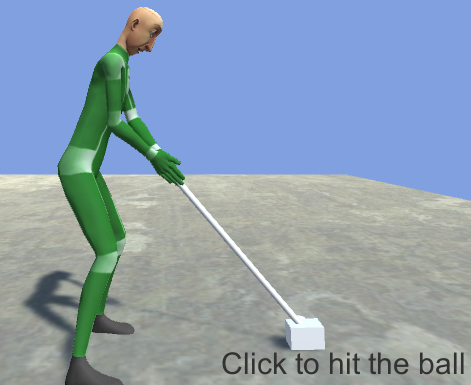

This page is part of the Game Manager example.
This page explains how to implement the exact same mechanics as the Game Manager Enum using Animancer's Finite State Machine system.
Main Script
Where the enum-based system stuck everything in one big script, this time we are using several smaller scripts.
The GameManagerFSM script contains the state machine and main references that are used by multiple states, but the rest of the fields from the GameManagerEnum script are instead contained in the scripts for the states where they are actually relevant:
using Animancer;
using Animancer.FSM;
using UnityEngine;
using UnityEngine.UI;
public sealed partial class GameManagerFSM : MonoBehaviour
{
public static GameManagerFSM Instance { get; private set; }
[SerializeField] private Transform _Camera;
[SerializeField] private Text _Text;
[SerializeField] private Events.GolfHitController _Golfer;
private StateMachine<State> _StateMachine;
private void Awake()
{
Debug.Assert(Instance == null, $"The {nameof(GameManagerFSM)}.{nameof(Instance)} is already assigned.");
Instance = this;
_StateMachine = new StateMachine<State>(_Introduction);
if (FindObjectOfType<GameManagerEnum>() != null)
Debug.LogError(
$"Both the {nameof(GameManagerEnum)} and {nameof(GameManagerFSM)} are active. Exit Play Mode and disable one of them.");
}
private void Update()
{
_StateMachine.CurrentState.Update();
}
}
Singleton
Since we are using multiple scripts, we will need them to be able to access each other somehow. This example simplifies a few things, but even in a real game you would likely only ever have one Game Manager at a time so we are using a very basic singleton consisting of a static Read-Only Auto Property:
public static GameManagerFSM Instance { get; private set; }
Which we can validate and assign in Awake:
private void Awake()
{
Debug.Assert(Instance == null, $"The {nameof(GameManagerFSM)}.{nameof(Instance)} is already assigned.");
Instance = this;
...
The Sequence Coroutine example has a quick explanation of Debug.Assert.
If we didn't want to use a singleton, another approach would be to give our Base State class an Initialise method which we call on each state in Awake to pass this GameManagerFSM into the state so they can all access the shared fields like the _Camera and _Text.
Serialized Fields
This script only has fields which are used by multiple states:
[SerializeField] private Transform _Camera;
[SerializeField] private Text _Text;
[SerializeField] private Events.GolfHitController _Golfer;
All the other Serialized Fields from the enum-based implementation are instead located in the states that actually use each of them.

State Machine
The state machine itself is just a field (non-serialized):
private StateMachine<State> _StateMachine;
Which we initialise in Awake to start in the _Introduction state:
private void Awake()
{
...
_StateMachine = new StateMachine<State>(_Introduction);
...
}
And Update the CurrentState every frame:
private void Update()
{
_StateMachine.CurrentState.Update();
}
The Base State section explains all that in more detail.
Usage Warning
With two implementations of the same thing in this example, we want to make sure that only one is active at a time. So the GameManagerFSM can just call FindObjectOfType<GameManagerEnum>() and log an error if it finds the other system:
private void Awake()
{
...
if (FindObjectOfType<GameManagerEnum>() != null)
Debug.LogError(
$"Both the {nameof(GameManagerEnum)} and {nameof(GameManagerFSM)} are active. Exit Play Mode and disable one o them.");
}
The other system can still be in the scene as long as it is deactivated because FindObjectOfType doesn't find inactive objects.
Partial Classes
You might be wondering how that script can actually be used for anything since all its members (except the singleton Instance) are private and it doesn't seem to do much on its own. The answer is a combination of Partial Classes and Nested Types.
If you look at the class declaration, you can see that it has the partial keyword:
public sealed partial class GameManagerFSM : MonoBehaviour
This means that you can have other scripts in your project which declare the same partial class and they will all get compiled into a single class and function as if everything were in a single script (as long as all the parts are under the same Assembly Definition). For example, the GameManagerFSM.IntroductionState script contains the following:
// No need to repeat the details like public, sealed, or the inheritance from MonoBehaviour:
partial class GameManagerFSM
{
// Add the state as another serialized field to the GameManagerFSM class:
[SerializeField] private IntroductionState _Introduction;
// And declare the state as a nested class inside GameManagerFSM:
[Serializable]
public sealed class IntroductionState : State
{
[SerializeField] private float _OrbitSpeed = 45;
[SerializeField] private float _OrbitRadius = 3;
...
}
}
So with all the states declared as Serializable classes and adding their own fields to the GameManagerFSM, we end up with a system that still only consists of a single component attached to an object in the scene, but this time the Inspector fields are automatically organised into groups according to what they are actually used for:
And since all those fields are part of the same class, the Awake method in the GameManagerFSM.cs script can initialise the state machine to start in the _Introduction state:
private void Awake()
{
...
_StateMachine = new StateMachine<State>(_Introduction);
...
}
Base State
The first step for Basic Usage of the system is to make a base state class which implements the IState Interface (or Inherits from something that implements it such as State or StateBehaviour). If we implemented IState directly we would need to declare all 4 of its members ourselves, but since the only one that will actually have common functionality between all states is OnEnterState, we are instead making our State class inherit from FSM.State which just implements that interface with empty virtual methods so we only need to override the ones we want:
partial class GameManagerFSM
{
public abstract class State : FSM.State
{
...
public override void OnEnterState()
{
...
}
...
Updates
As mentioned in the Design Rationale section, Animancer's state machine does not do anything on its own so it doesn't have an Update or Tick method like many other systems. Instead, it is a generic system which allows you to define your own Update method if you need one.
That means we can utilise Polymorphism by giving our base State class a virtual Update method (or it could be abstract, see the Inheritance Keywords section for more information):
public virtual void Update() { }
Then any state that wants to do something every frame can simply override that method.
And since the StateMachine we declared back in the main GameManagerFSM script uses this State class as its generic state type:
public sealed partial class GameManagerFSM : MonoBehaviour
{
private StateMachine<State> _StateMachine;
That allows its Update method (which will be automatically called by Unity since it's a MonoBehaviour Message) to call the CurrentState's Update method every frame:
private void Update()
{
_StateMachine.CurrentState.Update();
}
The state's Update method won't get automatically called by Unity because the State class doesn't inherit from MonoBehaviour. All of the other State Machines examples have their base state classes inherit from StateBehaviour (which inherits from MonoBehaviour) because it's usually so much more convenient to have Unity automatically call whatever update methods a particular state has. That way one state might have an Update method and another might have a FixedUpdate method without you needing to set up your state machine to call all of the supported methods.
Display Text
Instead of having each individual state call make its own call to _Text.gameObject.SetActive(...); and set the _Text.text, we can utilise Polymorphism again just like with the Update method.
We start with a virtual property to define the state's DisplayText which will return null unless overridden by a state:
partial class GameManagerFSM
{
public abstract class State : FSM.State
{
public virtual string DisplayText => null;
Then we can override the OnEnterState method we inherited from FSM.State:
public override void OnEnterState()
{
base.OnEnterState();
The OnEnterState method in FSM.State is virtual, meaning that it contains its own implementation (where abstract means the base class has no implementation for it and every child class must override it). In this case, that base implementation is just an empty method so calling base.OnEnterState(); will simply do nothing, but in other cases you will need to decide whether you want to replace the base implementation entirely or add other operations before and/or after it.
To use that property we simply get its value:
- If it is not null then we want to show the
_Textcomponent (which we access through the SingletonInstance) and assign the string that we got from the property. - Or if it is null (because whatever state this is didn't
overrideit to return something else) then we just want to hide the_Textcomponent.
var displayText = DisplayText;
if (displayText != null)
{
Instance._Text.gameObject.SetActive(true);
Instance._Text.text = displayText;
}
else
{
Instance._Text.gameObject.SetActive(false);
}
}
Introduction State
The GameManagerFSM.IntroductionState script contains the equivalent of the Introduction State from the enum-based system:
partial class GameManagerFSM
{
[SerializeField] private IntroductionState _Introduction;
[Serializable]
public sealed class IntroductionState : State
{
[SerializeField] private float _OrbitSpeed = 45;
[SerializeField] private float _OrbitRadius = 3;
public override string DisplayText => "Welcome to the Game Manager example\nClick to start playing";
public override void OnEnterState()
{
base.OnEnterState();
Instance._Golfer.EndSwing();
}
public override void Update()
{
var camera = Instance._Camera;
var euler = camera.eulerAngles;
euler.y += _OrbitSpeed * Time.deltaTime;
camera.eulerAngles = euler;
var lookAt = Instance._Golfer.transform.position;
lookAt.y += 1;
camera.position = lookAt - camera.forward * _OrbitRadius;
if (Input.GetMouseButtonUp(0))
Instance._StateMachine.TrySetState(Instance._Ready);
}
}
}
- Where the
_IntroductionOrbitSpeedand_IntroductionOrbitRadiusFields from the enum-based system needed long names to make it clear what they are used for, here we can give them shorter names (_OrbitSpeedand_OrbitRadius) because we already know they are inside theIntroductionState. - This
OnEnterStatemethod is a lot simpler than theIntroductioncase from the enum-based system because the_Textis already handled by the baseStateclass and the_FadeImageis fully managed by the Fade State.- Also note that where our base
Stateclassoverrides theOnEnterStatemethod it inherits fromFSM.Stateand it doesn't matter if thatoverridecallsbase.OnEnterState();because that base method is empty (as explained back in the Display Text section), this time when weoverridethat method we definitely do want to call the base implementation because that's where we update the Display Text.
- Also note that where our base
- The
Updatemethod is basically the same but instead of changing to theReadystate by setting theCurrentStateproperty, this time we callInstance._StateMachine.TrySetState(Instance._Ready);.- It's called TrySetState becase it will only try to change to the specified state. All state changes are allowed in this example, but the Interrupt Management example explains how states can prevent the state machine from changing to them or changing away from them depending on the situation.

Ready State
The GameManagerFSM.ReadyState script contains the equivalent of the Ready State from the enum-based system:
using System;
using UnityEngine;
partial class GameManagerFSM
{
[SerializeField] private ReadyState _Ready;
public sealed class ReadyState : State
{
[SerializeField] private Vector3 _CameraPosition;
[SerializeField] private Vector3 _CameraRotation;
public override string DisplayText => "Click to hit the ball";
public override void OnEnterState()
{
base.OnEnterState();
ResetCamera();
Instance._Golfer.enabled = true;
}
public void ResetCamera()
{
Instance._Camera.position = _CameraPosition;
Instance._Camera.eulerAngles = _CameraRotation;
}
public override void Update()
{
if (Instance._Golfer.CurrentState != Events.GolfHitController.State.Ready)
Instance._StateMachine.TrySetState(Instance._Action);
}
}
}
This state has similar differences from the enum-based system as the Introduction State and has also moved the code to reset the camera into a separate public method from OnEnterState so that the Fade State will be able to call it.

Action State
The GameManagerFSM.ActionState script contains the equivalent of the Action State from the enum-based system:
using System;
using Unity
partial class GameManagerFSM
{
[SerializeField] private ActionState _Action;
[Serializable]
public sealed class ActionState : State
{
[SerializeField] private float _CameraTurnSpeedFactor = 5;
[SerializeField] private Rigidbody _Ball;
public override string DisplayText
=> $"Wait for the ball to stop\nCurrent Speed: {Instance._Ball.velocity.magnitude:0.00}m/s";
public override void OnEnterState()
{
base.OnEnterState();
Instance._Golfer.enabled = false;
}
public override void Update()
{
var ball = Instance._Ball;
var camera = Instance._Camera;
var targetRotation = Quaternion.LookRotation(ball.position - camera.position);
camera.rotation = Quaternion.Slerp(camera.rotation, targetRotation, _CameraTurnSpeedFactor * Time.deltaTime);
Instance._Text.text = DisplayText;
if (Instance._Golfer.CurrentState == Events.GolfHitController.State.Idle &&
ball.IsSleeping())
Instance._StateMachine.TrySetState(Instance._Fade);
}
}
}
Similar stuff again there.

Fade State
The GameManagerFSM.FadeState script contains the equivalent of both the Fade Out State and Fade In State from the enum-based system:
using System;
using UnityEngine;
using UnityEngine.UI;
partial class GameManagerFSM
{
[SerializeField] private FadeState _Fade;
[Serializable]
public sealed class FadeState : State
{
[SerializeField] private Image _Image;
[SerializeField] private float _Speed = 2;
private bool _IsFadingOut;
public override void OnEnterState()
{
base.OnEnterState();
_Image.gameObject.SetActive(true);
_Image.color = new Color(0, 0, 0, 0);
_IsFadingOut = true;
}
public override void Update()
{
var targetAlpha = _IsFadingOut ? 1 : 0;
var color = _Image.color;
color.a = Mathf.MoveTowards(color.a, targetAlpha, _Speed * Time.deltaTime);
_Image.color = color;
if (color.a == targetAlpha)
{
if (_IsFadingOut)
{
Instance._Ready.ResetCamera();
Instance._Golfer.ReturnToReady();
_IsFadingOut = false;
}
else
{
Instance._StateMachine.TrySetState(Instance._Ready);
}
}
}
public override void OnExitState()
{
base.OnExitState();
_Image.gameObject.SetActive(false);
}
}
}
- Where the enum-based system used two states (
FadeOutandFadeIn), this time we are just using oneFadeStatefor both with an_IsFadingOutfield to remember which part we are at. That lets us avoid writing almost identical code multiple times. - Where the enum-based system made all states set the
_FadeImageto active or inactive because we didn't bother implementing anOnExitStatemethod, here we can justoverridetheOnExitStatemethod that we already inherited from the baseFSM.Stateso we can disable the_Imageto avoid needing other states to worry about things that have nothing to do with them. - This state has no Display Text so it doesn't bother overriding the
DisplayTextproperty.

Next
The Comparison page gives a more general explanation of the differences between this approach and the enum-based approach.